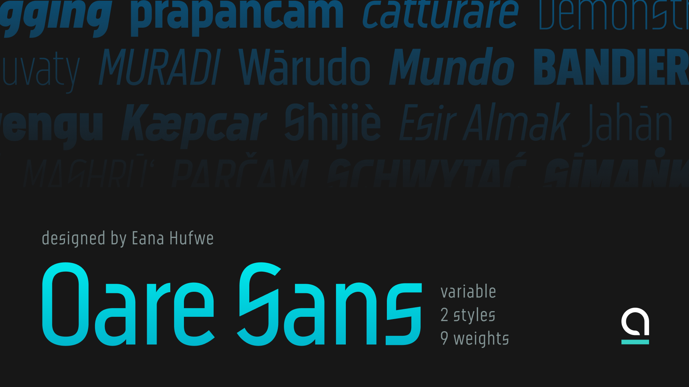
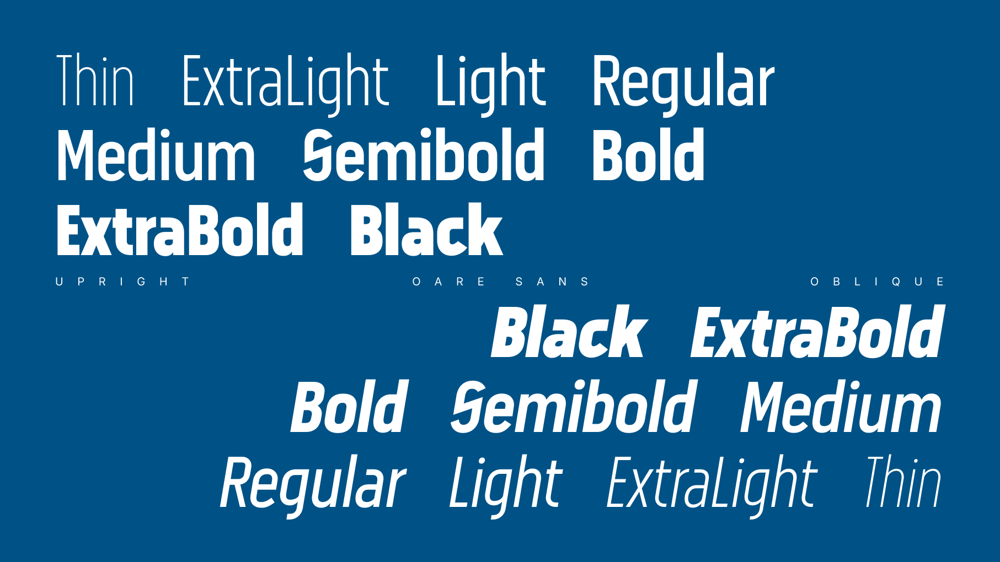
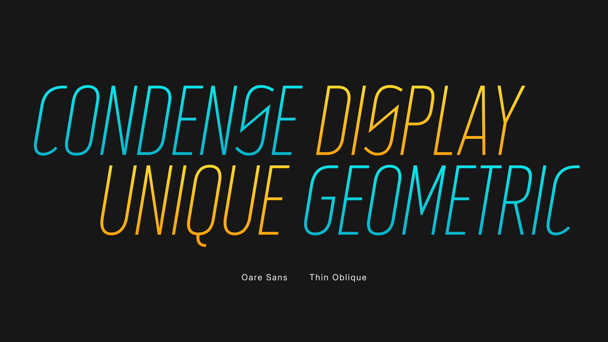
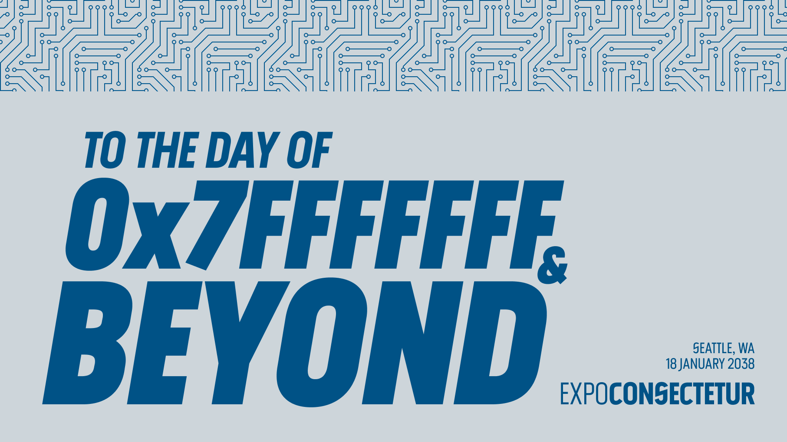
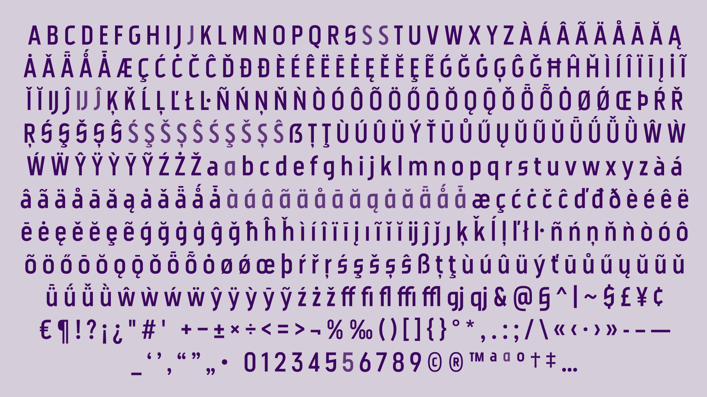

Oare Sans is a condensed display sans-serif typeface that combines narrow proportions with open apertures and distinctive letterforms. Letters such as C and S bring an open quality to its compact design, while the uppercase J descends below the baseline, its tail pairing with the curve of the preceding letter.
A variable weight axis spans Thin (100) to Black (900), offering a range from fine strokes to dense, emphatic shapes. A separate slant axis allows the letterforms to lean into oblique styles, giving designers independent control over weight and slant.
OpenType features include stylistic sets for alternative letterforms, common ligatures, and case-sensitive forms for uppercase settings. Oare Sans covers the Google Fonts Latin Basic character set, with additional support for common Pinyin diacritics.
To contribute, see github.com/blueset/oare-sans.




